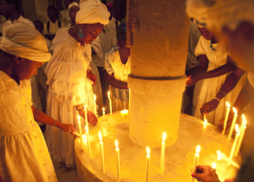
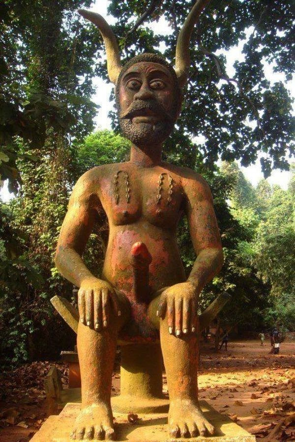
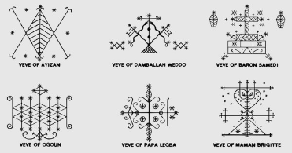

The religion of Voodoo comes from the
West African Vodun tradition and so this article will focus on the
the original Vodun. Voodoo practiced in Haiti and the Americas is
more so a mix up of traditional African religions with some European
and Native Indian Influence.
Vodun is an ancestral and nature based
following in which spiritual transformation is attained via the
direct communication with gods of nature.

It is a very old religion. Some scholars
even estimate that it may be almost 10,000 years old.
Whatever the case may be, Vodun has gone through much corruption and
transition since the arrival of Christianity and with thousands of
years of enemy attack. Many Vodun priests and practitioners were
killed and some imprisoned. Shrines and many places of worship were
destroyed over the course of this time. Only recently has Vodun in
Africa has been practiced openly and freely without socio-political
attack.
Since the Black race's history has been
based on oral traditions and each tribe having keepers of the
tradition, the traditional religions that have been infiltrated has
distortion but on the upside, many tribes in Africa who have avoided
a significant amount of enemy persecution can recall their existence
and traditions all the way back to the beginning.
*The African word 'Vodun' is similar to Vodan/Wodan/Wod/Odin( the
same in European paganism. Wodan and Odin are the gods the white
europeans also worshipped. They are connected since all ancient
Pagan and Satanic religions of the world came from Satan and the
gods, regardless of race)
The V in Vodun indicates the Mercury or in
other words, the
serpent life force. The kundalini. The same can also be said for the
O. Words and vowels have power. This is the power of speech and
letters.*
The Vodun god, most commonly referred to
as Legba is the chief god and Solar archetype of
the religion. He is the highest honored and widely worshiped god in
the Vodun pantheon. In rituals he must be invoked and acknowledged
first in order for communication between humans and the gods to be
successful.
The Black Africans say that he is the way
to all of the gods and opener of the gates.
*Legba is depicted as a virile horned being with an erect phallus.
The horns, like that of the Mercury glyph,
represent the perfected life force and power. The phallus is liken
to the spine which the serpent energy flows upward. It is the
kundalini fully arisen. He is also the god of creative healing and
sexuality.*

*Legba is an aspect of Satan. In Africa
there are still many statues and altar areas with depictions of him.
Legba was said to have given his people the power of the oracle and
divination to help them direct their fate.*
Another god or force in Vodun is
Da, the rainbow serpent. The rainbow serpent is the
kundalini and Da is said to carry all the messages of the gods and
ascends to heaven in the form of a rainbow. This is the kundalini
serpent rising up to the crown chakra.
Da is also known as
Dangbe,
Dan,
Aido Wedo and
Damballah (in the Haitian Voodoo pantheon). All these are
aspects of the great cosmic serpent. The primordial energy, the ever
moving force. There are still temples and shrines in honor of Da and
so, pythons and snakes are sacred in many parts of Africa just like
in many pagan religions across the world.
*The rainbow serpent is a symbol in many of the black race's
mythology. As well as Serpents and snakes (kundalini) residing in
water (life force and feminine principle).*
In Vodun, the basis of the whole practice
is to achieve spiritual transformation by making sacrifices to the
gods. In Vodun, all of its practitioners put emphasis on feeding the
gods and that the gods are alive because they are worshiped and that
it is humans that keep the gods alive. The gods are indeed the
chakras.
The sacrifice is advancing our souls and doing the daily practice of
meditation to reach a higher level of existence.
In Voodoo, you will also see that Veves (symbols of the gods) are
used to contact them. The Veves look identical to
the the Daemon goetic symbols. The Daemon gods mentioned that some of the
Voodoo Veves are based off of their sigils.

The veve of Legba is identical to the equal armed cross symbol that
represents the 4 corners, 4 elements and cardinal directions, as
well as the perfected aligned soul. Its no coincidence that Legba
represents the elevated soul energy as well.
With Voodoo dancing, it was a method used to achieve union
with the body and to achieve spiritual transformation. The dancers
would enter into a trance and the Shakti energy would activate
flowing upward in the spine and the astral senses opened. This is
why dancing is a big part of African culture. It is expressive and
spiritual.
Now, when one looks further into Vodun and Voodoo, you will come
across blood sacrifices of animals and humans (not as common
nowadays) and possessions.
The blood sacrificing is not the original Vodun way. Satan and the
Daemons would not allow or condone this. It is apparent that the
blood sacrificing is of the enemy. The enemy gods have taken over
and infiltrated this religion.
They say that the 'gods' demand the blood sacrifices because it
feeds them and if one does not give the gods attention then they can
reek chaos in your life. The bigger the sacrifice and greater the
blood, the more the 'god' may feel obligated to grant favors of
protection and such.
The enemy are the ones who benefit from and demand blood sacrifices.
The same occurrence goes for the Aztecs and other cultures. This is
clear infiltration. I am further disgusted because many who have
ignored the 'gods' and haven't given them a sacrifice have been
known to cause chaos in the practitioners life and even go after
their children...
This is not of Satan. Children and animals are sacred in Spirirual
Satanism.
During Vodun ceremony, many are possessed
while invoking these 'gods' and ultimately black out. This happens
during ceremony while participants dance and enter trance. They come
out of possession with no memory of what
happened. These 'gods' who
have taken over their bodies have been known to do things that
include, trivial dancing, eating glass and destroying clothing
or items or causing death or accident because the participant was
overwhelmed. Nothing is ever truly gained.
Our pagan
traditions have been distorted and attacked for thousands of years
but from doing my research on Vodun, I see the beauty that once was
in this practice. Of course some of the base practices still are in
tact. There are still ceremonies where an initiate 'dies' and is
reborn into the new serpent priesthood.
In essence, Vodun is the remains of a rich satanic tradition based
off of one's spiritual elevation and acknowledgement of our god
Satan as the way to spiritual growth.
Hail Satan!